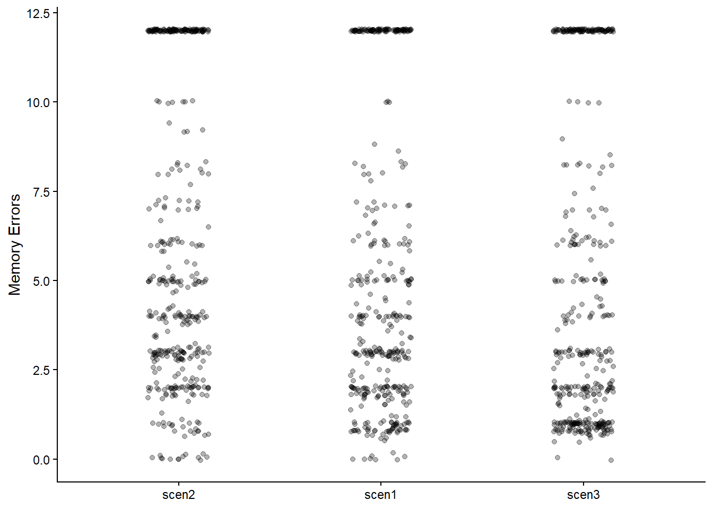
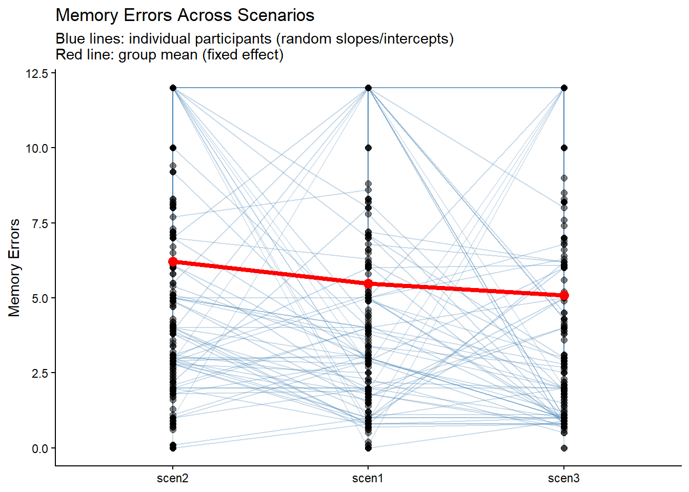
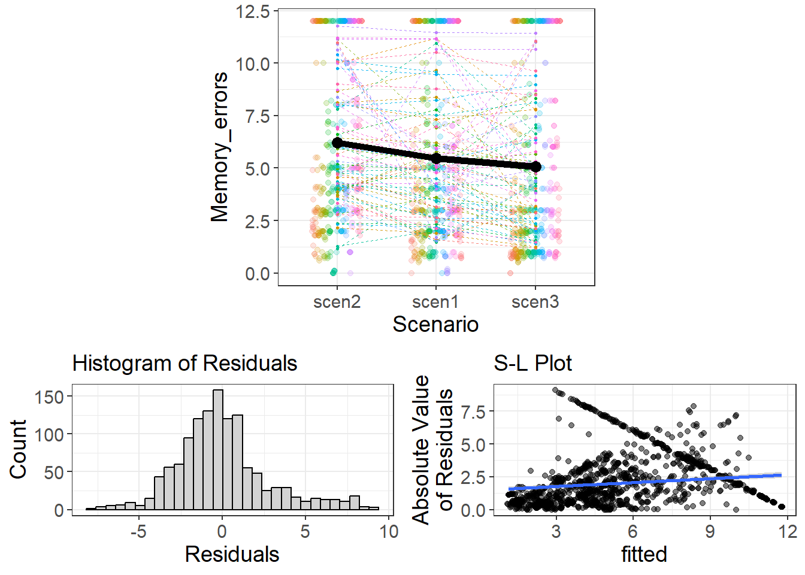

library(readxl)
library(dplyr)
library(tidyr)
library(lme4)
library(data.table)
library(ggplot2)
library(flexplot)
library(sandwich)
library(gee)
library(lmtest)
dat_original <- read_xlsx("Raw_Data.xlsx", skip = 1)
dat_original <- as.data.frame(dat_original)5 Multilevel data
In the previous chapter, we worked with a real dataset and performed standard statistical analyses such as t-tests and reliability analyses. However, many real-world datasets contain nested or clustered data structures. This becomes especially relevant when we want to address questions about individual differences as we discussed in a previous meeting. In this chapter, we take the next step: working with multilevel data in R.
In our example, legal professionals evaluated multiple scenarios. This means that each participant contributed multiple responses. The data are therefore not independent — responses are nested within individuals.
By the end of this chapter, you will be able to:
understand what multilevel (hierarchical) data are
reshape data from wide to long format
prepare nested data for analysis
run a basic multilevel model using
lme4interpret fixed and random effects
These skills are essential when working with repeated measures, longitudinal designs, educational data, or any structure where observations are grouped within higher-level units.
5.1 Dataset
In this example, we use data from a study among legal professionals in Belgium and the Netherlands. Participants evaluated three different scenarios, each consisting of six items measuring memory errors Download the dataset here.
Because each participant responded to multiple items across multiple scenarios, the dataset has a two-level structure:
- Level 1: Item responses
- Level 2: Participants
This nested structure requires multilevel modeling.
5.1.1 Load in Data
As before, we begin by loading the required packages and importing the dataset.
Again, we keep the original dataset untouched and perform all transformations on a new object when needed.
5.1.2 Viewing the Data
First, inspect the dataset:
View(dat_original)
head(dat_original) Start Date End Date Response Type Progress
1 2022-09-08 01:53:03 2022-09-08 01:59:06 IP Address 100
2 2023-02-17 04:14:45 2023-02-17 04:22:38 IP Address 100
3 2023-02-17 04:16:22 2023-02-17 04:24:30 IP Address 100
4 2023-02-17 04:19:27 2023-02-17 04:25:26 IP Address 100
5 2023-02-17 04:32:01 2023-02-17 04:37:19 IP Address 100
6 2023-02-17 04:36:01 2023-02-17 04:43:03 IP Address 100
Duration (in seconds) Finished Recorded Date Response ID
1 363 True 2022-09-08 01:59:07 R_4VoNppnDktI2CT7
2 472 True 2023-02-17 04:22:38 R_1qZZ9iZqVXpVK8t
3 487 True 2023-02-17 04:24:30 R_5zrwVhD6IZHWEDL
4 359 True 2023-02-17 04:25:27 R_1LzcN6i4yA5txsJ
5 318 True 2023-02-17 04:37:19 R_1hFuFPwrXsVrhQx
6 421 True 2023-02-17 04:43:03 R_BERedfHMeFn15f3
Distribution Channel User Language
1 anonymous EN
2 anonymous EN
3 anonymous EN
4 anonymous EN
5 anonymous EN
6 anonymous EN
Welkom bij deze studie!\r\n\r\n \r\n\r\nGeïnformeerde toestemming:\r\n\r\n\r\n\r\nWij zijn geïnteresseerd in wat juridische professionals beschouwen als praktisch relevant onderzoek op het gebied van het geheugen. Voor onze studie zult u 3 verschillende beschrijving ...
1 ik stem toe om deel te nemen
2 ik stem toe om deel te nemen
3 ik stem toe om deel te nemen
4 ik stem toe om deel te nemen
5 ik stem toe om deel te nemen
6 ik stem toe om deel te nemen
Leeftijd (in jaren) Geslacht - Selected Choice
1 23 Vrouw
2 43 Vrouw
3 52 Vrouw
4 60 Vrouw
5 65 Man
6 50 Man
Geslacht - Anders (graag specificeren): \r\n - Text List of Countries...15
1 <NA> Belgium
2 <NA> Netherlands
3 <NA> Netherlands
4 <NA> Netherlands
5 <NA> Netherlands
6 <NA> Netherlands
Behaalde Diploma’s (selecteer alles dat van toepassing is) - Selected Choice
1 Bachelor (bijv. BA, BS),Master (bijv. MA, MS, MEd),Master-na-master (bijv. MANAMA, postgraduaat)\r\n
2 Master (bijv. MA, MS, MEd)
3 Master (bijv. MA, MS, MEd)
4 Master (bijv. MA, MS, MEd)
5 Master (bijv. MA, MS, MEd)
6 Master (bijv. MA, MS, MEd)
Behaalde Diploma’s (selecteer alles dat van toepassing is) - Anders (graag specificeren): \r\n - Text
1 <NA>
2 <NA>
3 <NA>
4 <NA>
5 <NA>
6 <NA>
Studierichting (selecteer alles dat van toepassing is) - Selected Choice
1 Rechten
2 Rechten
3 Rechten
4 Rechten
5 Rechten
6 Rechten
Studierichting (selecteer alles dat van toepassing is) - Anders (graag specificeren):\r\n - Text
1 <NA>
2 <NA>
3 <NA>
4 <NA>
5 <NA>
6 <NA>
Wat is uw huidige beroep? - Selected Choice
1 Jurist
2 Advocaat
3 Advocaat
4 Advocaat
5 Advocaat
6 Advocaat
Wat is uw huidige beroep? - Anders (graag specificeren):\r\n - Text
1 <NA>
2 <NA>
3 <NA>
4 <NA>
5 <NA>
6 <NA>
Wat is de achtergrond van uw huidige beroep? - Selected Choice
1 Anders (graag specificeren):\r\n
2 Strafrecht
3 Strafrecht
4 Strafrecht
5 Strafrecht
6 Strafrecht
Wat is de achtergrond van uw huidige beroep? - Anders (graag specificeren):\r\n - Text
1 Publiekrecht
2 <NA>
3 <NA>
4 <NA>
5 <NA>
6 <NA>
Heeft u ooit gewerkt in het strafrecht?
1 Nee
2 <NA>
3 <NA>
4 <NA>
5 <NA>
6 <NA>
Welk beroep heeft u uitgeoefend in het strafrecht? - Selected Choice
1 <NA>
2 <NA>
3 <NA>
4 <NA>
5 <NA>
6 <NA>
Welk beroep heeft u uitgeoefend in het strafrecht? - Anders (graag specificeren):\r\n - Text
1 NA
2 NA
3 NA
4 NA
5 NA
6 NA
Hoeveel jaren werkt u ongeveer al in het rechtssysteem?
1 0
2 18
3 26
4 35
5 35
6 25
List of Countries...28
1 Belgium
2 Netherlands
3 Netherlands
4 Netherlands
5 Netherlands
6 United Kingdom of Great Britain and Northern Ireland
Hoeveel van zulke fouten in een getuigenverklaring zijn naar uw mening voldoende om de verklaring onbetrouwbaar te achten? - Aantal fouten...29
1 1.5
2 3.3
3 2.9
4 NA
5 0.8
6 2.9
Hoeveel van zulke fouten in een getuigenverklaring zijn naar uw mening voldoende om de verklaring buiten beschouwing te laten? - Aantal fouten...30
1 1.6
2 6.6
3 2.9
4 2.9
5 0.7
6 2.9
Hoeveel van zulke fouten in een getuigenverklaring zouden naar uw mening genoeg zijn om de getuige zelf buiten beschouwing te laten? - Aantal fouten...31
1 1.2
2 1.6
3 6.1
4 3.0
5 1.0
6 3.0
Hoeveel van zulke fouten in een getuigenverklaring zouden er naar uw mening toe leiden dat een rechter in uw rechtsgebied het bewijs buiten beschouwing laat? - Aantal fouten...32
1 0.6
2 NA
3 5.0
4 NA
5 1.9
6 10.0
Hoeveel van zulke fouten in een getuigenverklaring zijn volgens u nodig voordat u zou overwegen een deskundige in te schakelen om de rechter uit te leggen hoe het menselijk geheugen werkt? - Aantal fouten...33
1 1.5
2 NA
3 NA
4 1.4
5 1.0
6 4.0
Hoeveel van zulke fouten in een getuigenverklaring zouden er naar uw mening in het algemeen toe leiden dat een gemiddeld persoon het belang van het getuige bewijs verlaagt? - Aantal fouten...34
1 0.0
2 NA
3 3.9
4 5.0
5 0.8
6 5.2
Hoeveel van zulke fouten in een getuigenverklaring zijn naar uw mening voldoende om de verklaring onbetrouwbaar te achten? - Aantal fouten...35
1 2.0
2 2.1
3 0.9
4 2.4
5 1.8
6 2.9
Hoeveel van zulke fouten in een getuigenverklaring zijn naar uw mening voldoende om de verklaring buiten beschouwing te laten? - Aantal fouten...36
1 2.3
2 2.2
3 0.9
4 2.6
5 1.8
6 1.9
Hoeveel van zulke fouten in een getuigenverklaring zouden naar uw mening genoeg zijn om de getuige zelf buiten beschouwing te laten? - Aantal fouten...37
1 2.5
2 1.3
3 3.0
4 4.1
5 2.9
6 3.9
Hoeveel van zulke fouten in een getuigenverklaring zouden er naar uw mening toe leiden dat een rechter in uw rechtsgebied het bewijs buiten beschouwing laat? - Aantal fouten...38
1 2.2
2 NA
3 2.9
4 4.0
5 NA
6 10.0
Hoeveel van zulke fouten in een getuigenverklaring zijn volgens u nodig voordat u zou overwegen een deskundige in te schakelen om de rechter uit te leggen hoe het menselijk geheugen werkt? - Aantal fouten...39
1 NA
2 3.5
3 NA
4 3.0
5 0.8
6 3.1
Hoeveel van zulke fouten in een getuigenverklaring zouden er naar uw mening in het algemeen toe leiden dat een gemiddeld persoon het belang van het getuige bewijs verlaagt? - Aantal fouten...40
1 4.9
2 NA
3 1.8
4 5.5
5 2.0
6 5.0
Hoeveel van zulke fouten in een getuigenverklaring zijn naar uw mening voldoende om de verklaring onbetrouwbaar te achten? - Aantal fouten...41
1 0.9
2 0.7
3 2.5
4 0.9
5 0.8
6 3.0
Hoeveel van zulke fouten in een getuigenverklaring zijn naar uw mening voldoende om de verklaring buiten beschouwing te laten? - Aantal fouten...42
1 0.8
2 0.7
3 1.0
4 0.8
5 1.9
6 2.8
Hoeveel van zulke fouten in een getuigenverklaring zouden naar uw mening genoeg zijn om de getuige zelf buiten beschouwing te laten? - Aantal fouten...43
1 1.0
2 0.7
3 3.0
4 0.9
5 1.8
6 5.1
Hoeveel van zulke fouten in een getuigenverklaring zouden er naar uw mening toe leiden dat een rechter in uw rechtsgebied het bewijs buiten beschouwing laat? - Aantal fouten...44
1 0.0
2 7.0
3 2.9
4 0.8
5 NA
6 8.3
Hoeveel van zulke fouten in een getuigenverklaring zijn volgens u nodig voordat u zou overwegen een deskundige in te schakelen om de rechter uit te leggen hoe het menselijk geheugen werkt? - Aantal fouten...45
1 1.6
2 2.9
3 NA
4 0.9
5 0.9
6 3.0
Hoeveel van zulke fouten in een getuigenverklaring zouden er naar uw mening in het algemeen toe leiden dat een gemiddeld persoon het belang van het getuige bewijs verlaagt? - Aantal fouten...46
1 0.0
2 3.8
3 2.9
4 0.9
5 1.9
6 5.0
FL_26 - Block Randomizer - Display Order
1 FL_29|FL_60|FL_30
2 FL_60|FL_30|FL_29
3 FL_29|FL_30|FL_60
4 FL_29|FL_60|FL_30
5 FL_30|FL_29|FL_60
6 FL_30|FL_60|FL_29
FL_32 - Block Randomizer - Display Order
1 Case1Q1|Case1Q6|Case1Q4|Case1Q2|Case1Q5|Case1Q3
2 Case1Q3|Case1Q1|Case1Q5|Case1Q2|Case1Q4|Case1Q6
3 Case1Q5|Case1Q4|Case1Q6|Case1Q2|Case1Q1|Case1Q3
4 Case1Q4|Case1Q1|Case1Q2|Case1Q5|Case1Q6|Case1Q3
5 Case1Q2|Case1Q5|Case1Q3|Case1Q4|Case1Q1|Case1Q6
6 Case1Q2|Case1Q6|Case1Q3|Case1Q4|Case1Q1|Case1Q5
FL_31 - Block Randomizer - Display Order
1 Case2Q2|Case2Q3|Case2Q5|Case2Q4|Case2Q1|Case2Q6
2 Case2Q6|Case2Q2|Case2Q3|Case2Q1|Case2Q4|Case2Q5
3 Case2Q2|Case2Q5|Case2Q1|Case2Q6|Case2Q3|Case2Q4
4 Case2Q2|Case2Q5|Case2Q3|Case2Q1|Case2Q4|Case2Q6
5 Case2Q4|Case2Q1|Case2Q3|Case2Q6|Case2Q2|Case2Q5
6 Case2Q2|Case2Q3|Case2Q6|Case2Q1|Case2Q4|Case2Q5
FL_61 - Block Randomizer - Display Order
1 Case3Q3|Case3Q5|Case3Q1|Case3Q2|Case3Q4|Case3Q6
2 Case3Q1|Case3Q4|Case3Q2|Case3Q6|Case3Q3|Case3Q5
3 Case3Q2|Case3Q5|Case3Q6|Case3Q3|Case3Q1|Case3Q4
4 Case3Q5|Case3Q2|Case3Q3|Case3Q1|Case3Q6|Case3Q4
5 Case3Q2|Case3Q1|Case3Q6|Case3Q4|Case3Q3|Case3Q5
6 Case3Q6|Case3Q4|Case3Q5|Case3Q2|Case3Q3|Case3Q1At this stage, you may notice:
- Many long variable names
- Several variables not relevant for analysis
- Multiple columns corresponding to scenario items
- We will now clean and prepare the dataset.
5.2 Cleaning and Preparing the Data
5.2.1 Create participant column
dat_original$participants <- seq(1,nrow(dat_original),1)5.2.2 Rename question columns to x1-x18
dat_analysis <- dat_original %>%
rename_with(
~ paste0("x", 1:18),
.cols = 29:46
)5.2.3 Rename country column
dat_analysis <- dat_analysis %>%
mutate(Country = case_when(`List of Countries...28` == "Netherlands" ~ "NL",
`List of Countries...28` == "Belgium" ~ "BE",
`List of Countries...28` == "United States of America" ~ "USA",
TRUE ~ "Other"))5.2.4 Rename occupation column
setnames(dat_analysis, old = "Wat is uw huidige beroep? - Selected Choice", new = "Occupation")5.2.5 Recode “never” (=12) responses to NA
dat_analysis <- dat_analysis %>%
mutate_at(c("x1","x2","x3","x4","x5","x6","x7","x8","x9","x10","x11","x12","x13","x14","x15","x16","x17","x18"), ~replace_na(., 12)) # this is to make the option "never" in analyzable variable.5.2.6 Keep Relevant Participants
5.2.6.1 Step 1: Keep participants who completed at least one scenario
dat_analysis <- dat_analysis %>%
filter(Progress >= 49)5.2.6.2 Step 2: Keep participants from Belgium or the Netherlands
dat_analysis <- dat_analysis %>%
filter(Country %in% c("NL", "BE"))5.2.6.3 Step 3: Logical age-work consistency
dat_analysis <- dat_analysis %>%
filter(`Leeftijd (in jaren)` - `Hoeveel jaren werkt u ongeveer al in het rechtssysteem?` > 18)5.2.6.4 Step 4: Judges must have at least 5 years of experience
dat_analysis <- dat_analysis %>%
filter(!(Occupation == "Rechter" & `Hoeveel jaren werkt u ongeveer al in het rechtssysteem?` < 5))5.2.6.5 Step 5: Minimum survey duration
dat_analysis <- dat_analysis %>%
filter(`Duration (in seconds)` > 300)This leaves us with 69 participants just as in the original article.
nrow(dat_analysis)[1] 695.2.7 Create dataset for analysis
dat_analysis_wide <- dat_analysis %>%
select(
participants,
Country,
starts_with("x")
)
head(dat_analysis_wide) participants Country x1 x2 x3 x4 x5 x6 x7 x8 x9 x10 x11
1 1 BE 1.5 1.6 1.2 0.6 1.5 0.0 2.0 2.3 2.5 2.2 12.0
2 2 NL 3.3 6.6 1.6 12.0 12.0 12.0 2.1 2.2 1.3 12.0 3.5
3 3 NL 2.9 2.9 6.1 5.0 12.0 3.9 0.9 0.9 3.0 2.9 12.0
4 4 NL 12.0 2.9 3.0 12.0 1.4 5.0 2.4 2.6 4.1 4.0 3.0
5 5 NL 0.8 0.7 1.0 1.9 1.0 0.8 1.8 1.8 2.9 12.0 0.8
6 7 NL 12.0 12.0 12.0 12.0 12.0 12.0 10.0 12.0 12.0 12.0 12.0
x12 x13 x14 x15 x16 x17 x18
1 4.9 0.9 0.8 1.0 0.0 1.6 0.0
2 12.0 0.7 0.7 0.7 7.0 2.9 3.8
3 1.8 2.5 1.0 3.0 2.9 12.0 2.9
4 5.5 0.9 0.8 0.9 0.8 0.9 0.9
5 2.0 0.8 1.9 1.8 12.0 0.9 1.9
6 2.9 4.3 12.0 1.3 12.0 6.8 10.05.3 Wide vs Long Format
Currently, each participant has one row, and each question is stored in a separate column (x1 to x18; see above). This is called wide format.
However, multilevel models require long format, where: - Each row represents one participant-item combination - Each participant therefore has multiple rows
Reshaping data is a crucial skill in advanced data analysis.
5.3.1 Convert to Long Format
We use pivot_longer():
dat_analysis_long <- dat_analysis_wide %>%
pivot_longer(
cols = starts_with("x"),
names_to = "Questions",
values_to = "Memory_errors"
)Now, each participant contributes 18 rows — one per question.
5.3.2 Create Scenario Variable
Each scenario contains six items: - x1–x6 → Scenario 1 - x7–x12 → Scenario 2 - x13–x18 → Scenario 3
# Create grouping variable for scenario
dat_analysis_long <- dat_analysis_long %>%
mutate(Scenario = ifelse(Questions == "x1", "scen1",
ifelse(Questions == "x2", "scen1",
ifelse(Questions == "x3", "scen1",
ifelse(Questions == "x4", "scen1",
ifelse(Questions == "x5", "scen1",
ifelse(Questions == "x6", "scen1",
ifelse(Questions == "x7", "scen2",
ifelse(Questions == "x8", "scen2",
ifelse(Questions == "x9", "scen2",
ifelse(Questions == "x10", "scen2",
ifelse(Questions == "x11", "scen2",
ifelse(Questions == "x12", "scen2",
"scen3")))))))))))))5.3.3 Set scenario as factor and set reference group
dat_analysis_long$Scenario <- as.factor(dat_analysis_long$Scenario)
dat_analysis_long$Scenario <- relevel(dat_analysis_long$Scenario , ref = "scen2")5.4 Data Visualization
Before modeling, it is always helpful to visualize the data.
ggplot(dat_analysis_long, aes(x = Scenario, y = Memory_errors)) +
geom_jitter(width = 0.15, alpha = 0.3) + theme_minimal() +
labs(y = "Memory Errors", x = NULL) +
theme_classic()
5.5 Plot multilevel data
ggplot(dat_analysis_long, aes(x = Scenario, y = Memory_errors, group = participants)) +
# Individual participant trajectories (random slopes)
geom_line(alpha = 0.3, color = "steelblue") +
# Individual data points
geom_point(alpha = 0.5, size = 2) +
# Overlay average trend (fixed effect)
stat_summary(aes(group = 1), fun = mean, geom = "line", color = "red", size = 1.5) +
stat_summary(aes(group = 1), fun = mean, geom = "point", color = "red", size = 3) +
theme_classic() +
labs(
y = "Memory Errors",
x = NULL,
title = "Memory Errors Across Scenarios",
subtitle = "Blue lines: individual participants (random slopes/intercepts)\nRed line: group mean (fixed effect)"
)
Because participants contribute multiple observations, the points are clustered within individuals.
5.6 Multilevel Model
We now fit a linear mixed-effects model.
model1 <- lmer(Memory_errors ~ Scenario + (Scenario | participants),
data = dat_analysis_long)
summary(model1)Linear mixed model fit by REML ['lmerMod']
Formula: Memory_errors ~ Scenario + (Scenario | participants)
Data: dat_analysis_long
REML criterion at convergence: 6606.4
Scaled residuals:
Min 1Q Median 3Q Max
-2.6554 -0.5758 -0.1165 0.3510 3.0664
Random effects:
Groups Name Variance Std.Dev. Corr
participants (Intercept) 9.625 3.102
Scenarioscen1 8.354 2.890 -0.47
Scenarioscen3 8.672 2.945 -0.44 0.36
Residual 8.815 2.969
Number of obs: 1242, groups: participants, 69
Fixed effects:
Estimate Std. Error t value
(Intercept) 6.2121 0.4010 15.492
Scenarioscen1 -0.7324 0.4045 -1.810
Scenarioscen3 -1.1295 0.4102 -2.753
Correlation of Fixed Effects:
(Intr) Scnrs1
Scenariscn1 -0.505
Scenariscn3 -0.488 0.396This model includes:
Fixed effect of Scenario (average differences between scenarios)
Random intercepts (participants differ in overall error levels)
Random slopes (participants differ in scenario effects)
5.7 plot the model with Flexplot
visualize(model1,
sample = 69)
5.8 Why Not Use a Regular ANOVA?
If we ignored the nested structure and treated all observations as independent, we would:
Underestimate standard errors
Inflate Type I error rates
Risk incorrect conclusions
Multilevel models account for individual differences explicitly. However, if you only want to take into account the dependency and are interested in the fixed effects, simpler solutions exist such as:
5.8.0.1 Optional: Cluster-robust standard errors
lm_model <- lm(Memory_errors ~ Scenario, data = dat_analysis_long)
coeftest(lm_model, vcov = vcovCL(lm_model, cluster = ~participants))
t test of coefficients:
Estimate Std. Error t value Pr(>|t|)
(Intercept) 6.21208 0.40130 15.4797 < 2.2e-16 ***
Scenarioscen1 -0.73237 0.40487 -1.8089 0.070711 .
Scenarioscen3 -1.12947 0.41054 -2.7512 0.006025 **
---
Signif. codes: 0 '***' 0.001 '**' 0.01 '*' 0.05 '.' 0.1 ' ' 15.8.1 Optional: Generalized Estimating Equations
gee_outcome <- gee(formula = Memory_errors ~ Scenario,
id = participants,
data = dat_analysis_long,
family = gaussian,
corstr = "independence")Beginning Cgee S-function, @(#) geeformula.q 4.13 98/01/27running glm to get initial regression estimate (Intercept) Scenarioscen1 Scenarioscen3
6.2120773 -0.7323671 -1.1294686 summary(gee_outcome)
GEE: GENERALIZED LINEAR MODELS FOR DEPENDENT DATA
gee S-function, version 4.13 modified 98/01/27 (1998)
Model:
Link: Identity
Variance to Mean Relation: Gaussian
Correlation Structure: Independent
Call:
gee(formula = Memory_errors ~ Scenario, id = participants, data = dat_analysis_long,
family = gaussian, corstr = "independence")
Summary of Residuals:
Min 1Q Median 3Q Max
-6.212077 -3.512077 -1.579710 5.787923 6.917391
Coefficients:
Estimate Naive S.E. Naive z Robust S.E. Robust z
(Intercept) 6.2120773 0.2113749 29.388913 0.3980640 15.605727
Scenarioscen1 -0.7323671 0.2989292 -2.449969 0.4016034 -1.823608
Scenarioscen3 -1.1294686 0.2989292 -3.778382 0.4072298 -2.773541
Estimated Scale Parameter: 18.49724
Number of Iterations: 1
Working Correlation
[,1] [,2] [,3] [,4] [,5] [,6] [,7] [,8] [,9] [,10] [,11] [,12] [,13]
[1,] 1 0 0 0 0 0 0 0 0 0 0 0 0
[2,] 0 1 0 0 0 0 0 0 0 0 0 0 0
[3,] 0 0 1 0 0 0 0 0 0 0 0 0 0
[4,] 0 0 0 1 0 0 0 0 0 0 0 0 0
[5,] 0 0 0 0 1 0 0 0 0 0 0 0 0
[6,] 0 0 0 0 0 1 0 0 0 0 0 0 0
[7,] 0 0 0 0 0 0 1 0 0 0 0 0 0
[8,] 0 0 0 0 0 0 0 1 0 0 0 0 0
[9,] 0 0 0 0 0 0 0 0 1 0 0 0 0
[10,] 0 0 0 0 0 0 0 0 0 1 0 0 0
[11,] 0 0 0 0 0 0 0 0 0 0 1 0 0
[12,] 0 0 0 0 0 0 0 0 0 0 0 1 0
[13,] 0 0 0 0 0 0 0 0 0 0 0 0 1
[14,] 0 0 0 0 0 0 0 0 0 0 0 0 0
[15,] 0 0 0 0 0 0 0 0 0 0 0 0 0
[16,] 0 0 0 0 0 0 0 0 0 0 0 0 0
[17,] 0 0 0 0 0 0 0 0 0 0 0 0 0
[18,] 0 0 0 0 0 0 0 0 0 0 0 0 0
[,14] [,15] [,16] [,17] [,18]
[1,] 0 0 0 0 0
[2,] 0 0 0 0 0
[3,] 0 0 0 0 0
[4,] 0 0 0 0 0
[5,] 0 0 0 0 0
[6,] 0 0 0 0 0
[7,] 0 0 0 0 0
[8,] 0 0 0 0 0
[9,] 0 0 0 0 0
[10,] 0 0 0 0 0
[11,] 0 0 0 0 0
[12,] 0 0 0 0 0
[13,] 0 0 0 0 0
[14,] 1 0 0 0 0
[15,] 0 1 0 0 0
[16,] 0 0 1 0 0
[17,] 0 0 0 1 0
[18,] 0 0 0 0 15.9 Summary
In this chapter, we extended our workflow from simple group comparisons to multilevel modeling. We: - Imported and cleaned a real dataset - Applied exclusion criteria - Reshaped data from wide to long format - Visualized nested data - Fit a linear mixed-effects model
Multilevel modeling allows us to properly analyze clustered data while accounting for individual differences. These models are essential in psychology, education, medicine, and many other fields where repeated measurements are common.